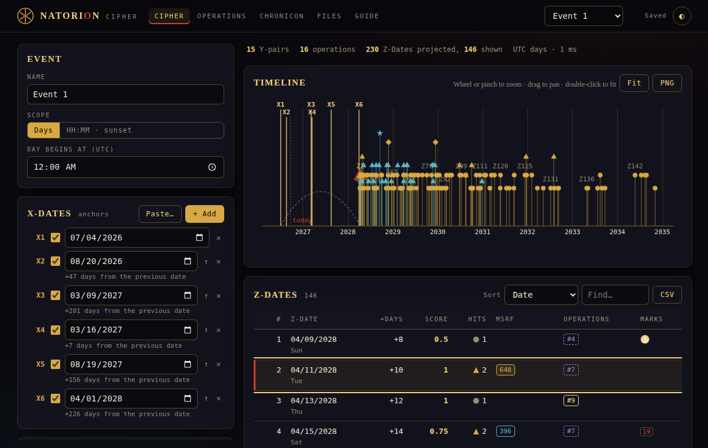
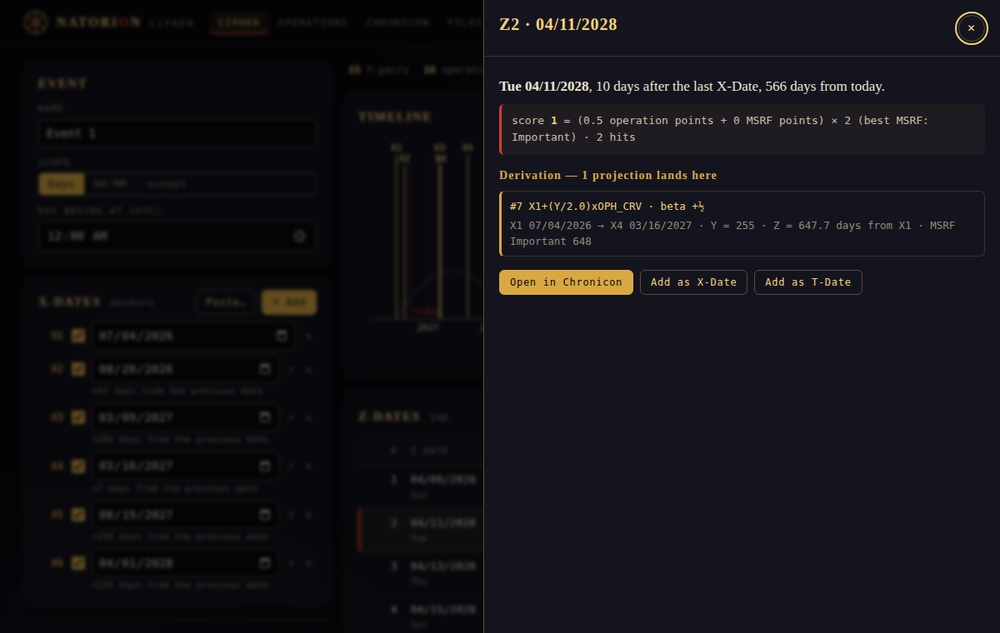
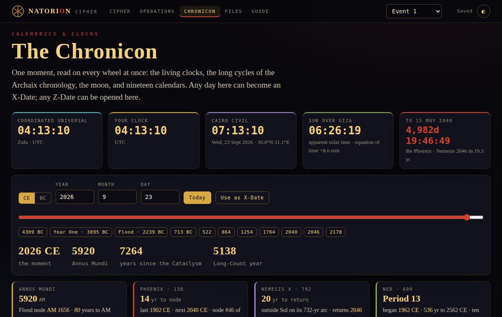
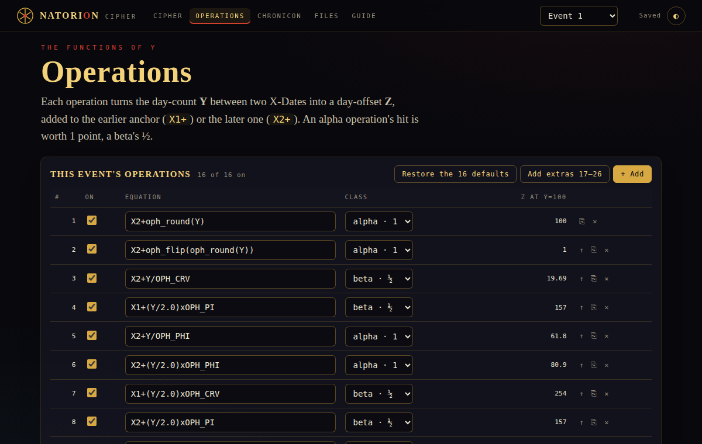

A date-projection engine · in your browser
Seed the dates · cast the numbers · read what survives
The Ophis v12 engine rebuilt as a plain web page, joined to the Chronicon's clocks, cycles and calendars. Nothing to install, no account, and nothing leaves your machine.

You give it dates that matter — X-Dates. It counts the days between every pair (Y), runs each count through sixteen small formulas, and lists the future days those formulas land on (Z-Dates), scored and ranked. Days whose counts hit the MSRF number sets score higher. Every result opens to show exactly how it was derived.
Alongside it sits the Chronicon: living clocks, the 138-year Phoenix lattice, Nemesis on its 792-year loop, the NER epochs and the baktuns, the moon, nineteen calendars, the event ledger — and the written Dossier on the Stone, Petrie ↔ Breshears and the 138-faced year. A day there can become an X-Date; a Z-Date can be opened there.
07/04/2026, 08/20/2026, 03/09/2027. The table and the timeline update as you go.Files from the original Ophis desktop app open as they are, and files saved here open in Ophis.



Open and save .oph, export CSV and Excel, keep several events in one document, copy settings between them.
The scoring rules, the MSRF sets, and every deliberate difference from the original, in one page.
Everything stacks into one column on a phone. Pinch the timeline to zoom.
Random events run through the original Ophis v12 code and through Natorion, side by side. Every Z-Date, score, hit and MSRF match agreed.
The real app, driven in Chromium: every screen, a known projection, files in and out, sunset scope, persistence, phone width.
Deliberate breaks to the app that the browser test catches. The thirtieth is a stylesheet rule that other rules already cover.
Formulas are parsed by a small grammar and never run as code. A shared .oph file cannot carry anything but arithmetic.
Sunsets and moon phases come from Astronomy Engine; time zones from your browser's own database (the original ships 2023 zone rules, so a place whose rules changed since reads an hour apart in HH:MM scope). The details are in the README.
Ophis v12 is an offline Electron app whose source ships un-obfuscated. This repository took it apart as a white-box study of .exe packaging and Electron attack surface, found the code-execution hole in its shared preset files, and then rebuilt the engine so that hole cannot exist. The write-up is the portfolio piece; the app is the proof.
The original is here too: the v12 .exe's own code, unchanged, running in your browser with a small stand-in for Electron. It behaves exactly like the desktop program, including that hole, so open only .oph files you trust.
19 · 91 · 138 · 831 · seed · cast · read · read · cast · seed